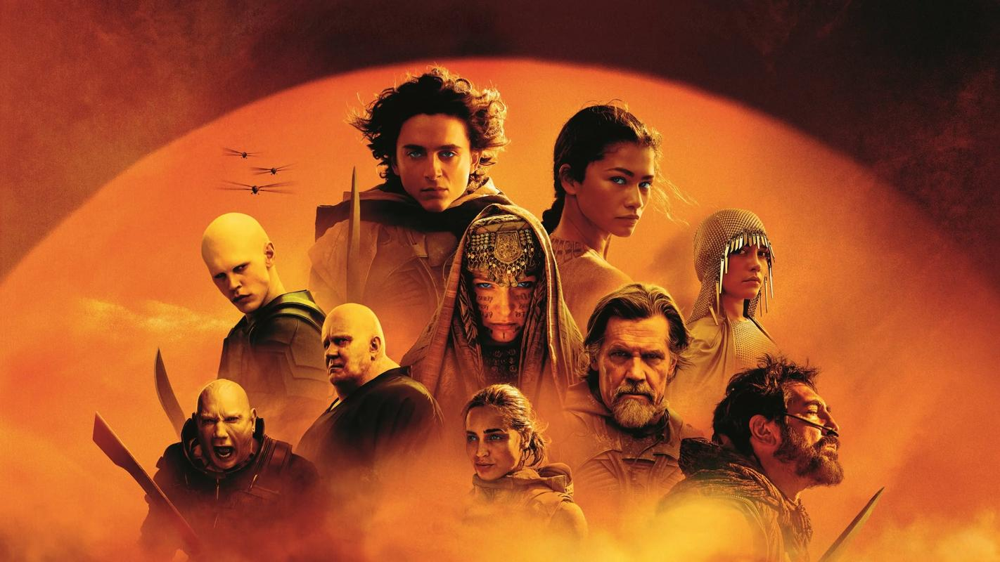

-
流浪地球
故事背景设定在2075年，讲述了太阳即将毁灭，已经不适合人类生存，而面对绝境，人类将开启“流浪地球”计划，试图带着地球一起逃离太阳系，寻找人类新家园的故事。
-
头号玩家
。《头号玩家》是一部由史蒂文·斯皮尔伯格执导的科幻冒险电影，改编自恩斯特·克莱恩的同名小说《玩家一号》。影片背景设定在2045年，当时虚拟现实技术高度发达，人们通过“绿洲”这款虚拟现实游戏逃避现实生活的种种问题。游戏的创始人詹姆斯·哈利迪在临终前设置了一个寻宝任务，谁能解开他设置的三个谜题并找到彩蛋，就能继承他的巨额财富和游戏的所有权，这引发了全球范围内的竞争。
- 
沙丘
《沙丘》是一部基于弗兰克·赫伯特同名小说的科幻电影，讲述了在遥远的未来，控制着珍贵资源的厄崔迪家族在遭遇背叛后，家族的继承人保罗决定接受命运的指引，保卫家族和人民的故事。
-

星际穿越
电影的剧情围绕地球面临生存危机展开，农作物因气候转变和枯萎病而频繁失收，人类生存受到威胁。前NASA宇航员库珀（马修·麦康纳饰）被迫成为农民以协助解决粮食危机。在一次沙尘暴后，库珀和女儿墨菲（麦肯吉·弗依饰）发现了一个秘密的NASA基地，得知土星附近出现了虫洞，可能成为人类移居的新希望。库珀被选中驾驶飞船前往探索可能适合人类居住的星球，任务中他面临了巨大的挑战和时间的考验。